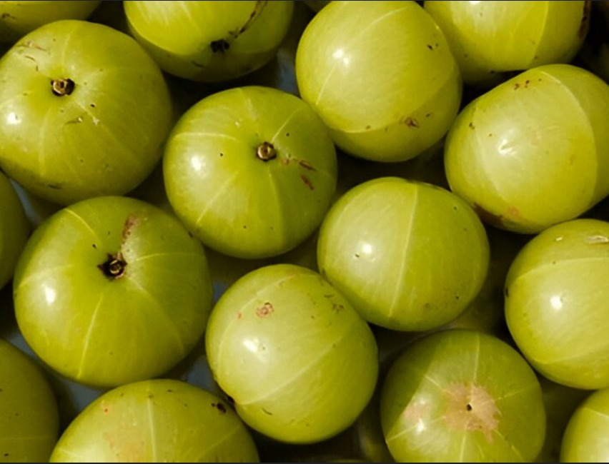

Benefits of Amla
Amla is a powerful fruit known for its numerous health benefits. Here are some of the key benefits:
- üåø Detoxifies the Body: Cleanses the liver and purifies blood, enhancing immune response.
- ❤️ Supports Gut Health: Promotes healthy gut bacteria, crucial for immune regulation.
- üåü Improves Digestion: Stimulates digestive enzymes and relieves indigestion.
- üåø Reduces Bloating: Eases gas and promotes a healthy gut.
- ü¶† Antimicrobial Properties: Fights bacteria and viruses, reducing the risk of infections.
Ways to Use Amla
Amla can be used in various forms to harness its benefits:
- ✅ Amla Juice: For a Vitamin C boost.
- ✅ Amla & Honey Mix: For antioxidant support.
- ✅ Amla & Ginger Tea: For cold and cough relief.
Precautions
While Amla is beneficial, it's important to use it wisely:
- üö´ Use in Moderation: Excessive consumption may raise acidity or cause an upset stomach.
- ⚠️ Blood Sugar Levels: It may lower blood sugar levels, so use cautiously if diabetic.
- ⚠️ Dehydration: Overuse may lead to dehydration due to its diuretic properties.
 0
0